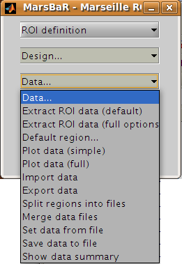

Running the ROI analysis¶
First, let us estimate the activation within the ROI for the first run. There are three stages to the analysis:
Choosing the design
Extracting the data
Estimating the design model with the data
The preprocessing for the example data created an SPM model for all three EPI
runs, so we already have a design made for the first run. We are going to use
this design and the trim_stim ROI to extract ROI data from the functional
scans. Then we will use the design and the extracted data to estimate the
model.
Stage 1: choosing the design¶
Click on the Design button in the MarsBaR window. You should get a menu like this:

Interface summary - design menu
The design menu offers options for creating, reviewing, estimating and processing SPM / MarsBaR designs.
Oddly, let us start at the end:
- Show default design summary
Displays a summary of the currently loaded design in the SPM graphics window
- Set design from file
will ask for a design file, and load the specified design into MarsBaR. The loaded design then becomes the default design. MarsBaR will from now on assume that you want to work with this design, unless you tell it otherwise by loading a different design.
- Save design to file
will save the current default design to a file.
- Set design from estimated
as we will see later, when MarsBaR estimates a design, it stores the estimated design in memory. Sometimes it is useful to take this estimated design and set it to be the default design, in order to be able to use the various of these menu options to review the design.
Now, from the top of the menu:
- PET models, FMRI models, and Basic models
will use the SPM design routines to make a design, and store it in memory as the default design.
- Explore
runs the SPM interface for reviewing and exploring designs.
- Frequencies (event+data)
can be useful for FMRI designs. The option gives a plot of the frequencies present in ROI data and the design regressors for a particular FMRI event. This allows you to choose a high-pass filter that will not remove much of the frequencies in the design, but will remove low frequencies in the data, which are usually dominated by noise.
- Add images to FMRI design
allows you to specify images for an FMRI design that does not yet contain images. SPM and MarsBaR can create FMRI designs without images. If you want to extract data using the design (see below), you may want to add images to the design using this menu item.
- Add/edit filter for FMRI design
gives menu options for specifying high pass and possibly (SPM99) low-pass filters, as well as autocorrelation options (SPM2 and later).
- Check images in the design
looks for the images names in a design, and simply checks if they exist on the disk, printing out a message on the matlab console window. A common problem in using saved SPM designs is that the images specified in the design have since moved or deleted; this option is a useful check to see it that has occurred.
- Change path to images
allows you to change the path of the image filenames saved in the SPM design, to deal with the situation when images have moved since the design was saved.
- Convert to unsmoothed
takes the image names in a design, and changes them so that they refer to the unsmoothed version of the same images – in fact it just removes the “s” prefix from the filenames. This can be useful when you want to use an SPM design that was originally run on smoothed images, but your ROI is very precise, so you want to avoid running the ROI analysis on smoothed data, which will blur unwanted signal into your ROI.
If you have been reading the interface summary, welcome back. Isn’t it strange how time just seems to stop when you are reading about graphical user interfaces?
Our plan was to choose our design. Select the Set design from file
option in the design menu and choose the SPM.mat file in the
sess1/SPM8_ana directory. MarsBaR loads the design into memory and
displays the design matrix in the SPM graphics window.
Stage 2: extracting the data¶
Before we can run the model, we need to extract the ROI data from the functional scans. This brings us to the data menu:
We are going to choose Extract ROI data(default), and for simple analyses this may be all you will ever need. For those with a thirst for knowledge, here is the:
Interface summary - data menu
- Extract ROI data (default)
takes one or more ROI files and a design, and extracts the data within the ROI(s) for all the images in the design. As for the default design, MarsBaR stores the data in memory for further use.
- Extract ROI data (full options)
allows you to specify any set of images to extract data from, and will give you a full range of image scaling options for extracting the data.
- Default region…
is useful when you have extracted data for more than one ROI. In this case you may want to restrict the plotting functions (below) to look only at one of these regions; you can set which region to use with this option. If you do not specify, MarsBaR will assume you want to look at all regions.
- Plot data (simple)
draws time course plots of the ROI data to the SPM graphics window. Plot data (full) has options for filtering the data with the SPM design filter before plotting, and for other types of plots, such as Frequency plots or plots of autocorrelation coefficients.
- Import data
allows you to import data for analysis from matlab, text files or spreadsheets. With Export data you can export data to matlab variables, text files or spreadsheets.
- Split regions into files
is useful in the situation where you have extracted data from more than one ROI, but you want to estimate with the data from only one of these ROIs. This can be a good idea for SPM2 (and later) designs, because, like SPM2 (and later), MarsBaR will pool the data from all ROIs when calculating autocorrelation. This may not be valid, as different brain regions can have different levels of autocorrelation. Split regions into files takes the current set of data and saves the data for each ROI as a separate MarsBaR data file.
- Merge data files
reverses the process of Split files above, by taking a series of ROI data files and making them into one set of data with many ROIs.
- Set data from file
will ask for a MarsBaR data file (default suffix
_mdata.mat) and load it into memory as the current set of data.- Save data to file
will save the current set of data to a MarsBaR data file.
- Show data summary
outputs some summary text to the SPM graphics window
Again, welcome back to our linear readers. For the tutorial, we want to
extract the data for our ROI, from the images in our design. Choose
Extract ROI data(default); the GUI will ask you to select one or more
ROIs files; select the trim_stim_roi.mat file. MarsBaR starts to
whirr. As it whirrs, it will:
Take each image in the design (you had already set the default design from the design menu);
Extract all the data within the ROI for each image, to give voxel time courses for each voxel in the ROI.
When it has finished, MarsBaR will calculate a new summary time course for each ROI. The summary time course has one value per scan, per ROI; by default, this new time course is made up of the means of all the voxel values in the ROI. For example, if there are only 5 voxels in the ROI, the first value in the summary time series will be the mean of the 5 voxel values for scan 1, the second value will be the mean of the 5 voxel values for scan 2, and so on. You can change the method of summarizing voxel data using the Statistics, Data summary function item in the MarsBaR options interface.
Technical note - the summary function
There are many ways to use ROI data, but the simplest approach, used by MarsBaR, is to treat the voxel values within the region of an image as many samples of the same signal. So, for each image, we find the voxels that are within the ROI, and calculate a single summary value to represent all the voxels in the ROI. This gives us one ROI summary value per image, and we can run the statistical model on this time-course of summary values.
The most obvious way of summarizing the values within the ROI is to take the mean. This is the default in MarsBaR. The mean can be greatly affected by outliers. If we suspect there may be outlier voxels in the ROI, the median may be more robust as a summary function. The other option offered as a summary function is the weighted mean. Usually ROIs are binary – meaning that they contain ones within the ROI and zeros elsewhere. In this case the weighted mean will be identical to the mean. However, it is possible to define ROIs which contain weighting values, where high values represent high confidence that this voxel is within the region of interest, and values near zero represent low confidence. In this situation, it can be useful to use the ROI values to weight the mean value.
Earlier versions of MarsBaR also offered the option of taking the first eigenvector of the signal. We removed it for version 0.42 because it seemed as if it was replicating the behavior of the SPM VOI routines - but it was not.
As MarsBaR extracts the data you will see its progress printed to the matlab console. When the extraction is done, the data is kept in memory. You can save the data to disk if you want using the Save data to file option on the data menu.
Now we have the design and the data we can estimate the model.
Stage 3: estimating the model¶
As the sweat pours from your brow, you click on the Results menu in the MarsBaR window. Scarcely believing it could be this easy, you choose the first item on the menu, Estimate results. It was that easy! MarsBaR takes the default design and the extracted data, and runs the model. There are more progress reports to the matlab console; finally you see the suggestion that you use the results section for assessment.